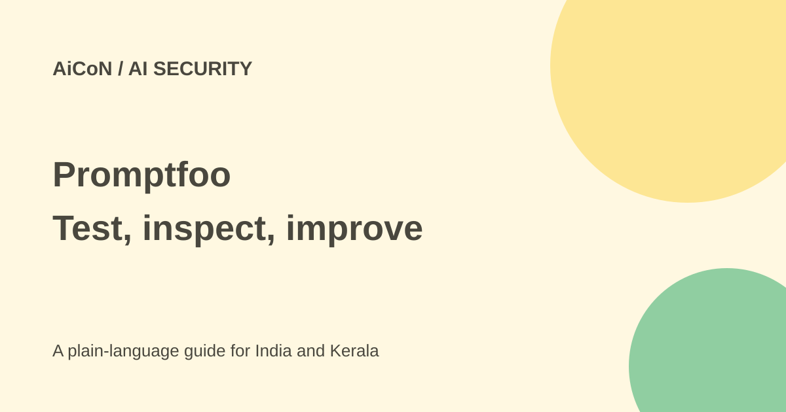

Promptfoo: test AI apps and check what leaves your machine
Promptfoo helps developers compare AI outputs and test applications against adversarial inputs. The tool is open source, but model calls can cost money and some default testing flows send data to hosted services.

What can Promptfoo do?
Promptfoo is a command-line tool and library for evaluating AI applications. It can compare prompts and models, check expected output and run red-team tests for weaknesses such as prompt injection, data leaks and unsafe tool use. Teams can add evaluations to their development checks rather than relying only on a few successful demos.
Its current repository says Promptfoo is part of OpenAI and remains open source under MIT. The actual licence is readable. This guide checks the tool and documentation, not a security audit of any particular AI application.
Free tool, limits and model costs
The Community pricing page lists evaluation features, local or self-hosted use and up to 10,000 red-team probes per month at no charge. A probe is a request to the target being tested. Dynamic test generation and grading can need model inference.
Calls to your chosen target model or other provider can still be billed. Enterprise and on-premise plans have custom prices and different limits. Do not treat "free forever" as unlimited free API access to every model.
Privacy needs separate configuration
The repository has a broad local-evaluation claim, but the detailed data-handling page explains exceptions. Without an API key or usable Codex/ChatGPT login, hosted generation and grading can send application purpose, plugin settings, prompts, target responses and grading criteria to Promptfoo's service. Some plugins and strategies are remote-only. Sharing, cloud sync and setup helpers have their own disclosure paths.
Using your own provider often moves generation and grading to that provider instead; it does not mean no outside processing. Keep real credentials out of setup or test forms, shared reports and synchronised configuration. The documentation says those flows can send pasted authorisation headers and request examples.
Basic usage telemetry is on by default. The telemetry page says it excludes prompts, outputs, test cases and API keys, but can include account identity fields if present locally. PROMPTFOO_DISABLE_TELEMETRY=1 disables that telemetry. This is separate from model processing.
How to start a small evaluation
- Use only an application you own or are authorised to test. Start on a test deployment with synthetic data and limited credentials.
- Current installation docs require Node.js 22.22.0 or newer and recommend Node.js 24 LTS. Check
node --versionfirst. - Follow the official npm, npx or Homebrew installation route. The README gives
promptfoo init --example getting-startedas a starter. - Configure the target model, a small test set and clear checks. Store API keys outside committed configuration.
- Run
promptfoo evaland review results withpromptfoo view. Check failures against source facts, not only an AI grader's opinion. - Before adding red teaming, read data handling, select the plugins and limit probe counts, concurrency and spend.
- Repeat tests after fixing a weakness and preserve the cases that exposed it.
Can everything be kept local?
PROMPTFOO_DISABLE_REMOTE_GENERATION=true disables supported hosted-generation fallbacks, but the current documentation explicitly says it is not a network-isolation guarantee. It does not disable telemetry, account checks, sharing, cloud sync, explicitly configured providers or every setup/test request. Remote-only plugins need a different plan or must be avoided.
For a no-Promptfoo-server workflow, review every generation, grading, embedding and moderation path, disable telemetry and avoid hosted-only features and sharing. For strict isolation, enforce network controls and check the documented on-premise option rather than assuming one environment variable does it.
For Kerala developers
Include Malayalam prompts, English-Malayalam mixing and local personal-data examples represented by fake records. Test whether the app leaks another user's information or acts beyond its permissions. Do not attack public services or a college chatbot without authorisation.
Passing one test suite does not prove an application is safe forever. Models, connected tools and documents change. Keep tests alongside ordinary access controls and human review.
What changed since the original post?
The 1 October post called the MIT tool free and noted separate API costs. This guide adds current Node requirements, the Community probe allowance, default telemetry and hosted-generation exceptions. It avoids repeating the broad "prompts never leave" claim without those details.
Frequently asked questions
Does local CLI mean fully private?
No. Target providers and hosted testing features can receive data.
Does disabling telemetry stop model requests?
No. These are separate flows.
Can I test any AI service?
Only within authorised scope and the service's rules.
Were tests run for this guide?
No. The workflow and limits were checked against current sources.
Sources: Official repository · MIT licence · Installation · Pricing · Data handling · Telemetry. Checked 7 October 2026.